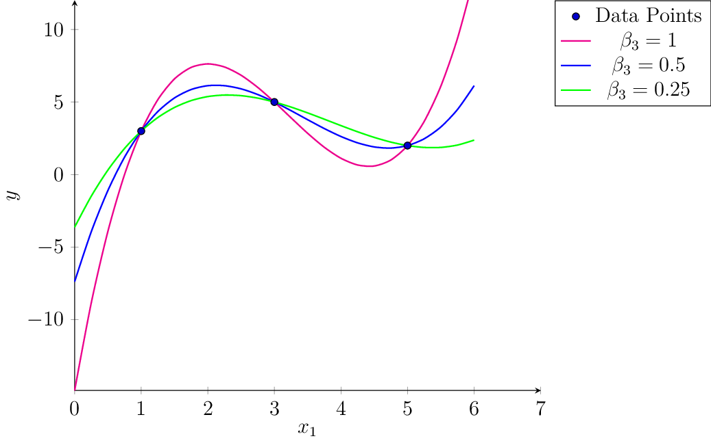

Minimizing the RSS#
Assuming that we have now selected a function class, and that it can be modelled as a linear function \(f(\vvec{x})=\bm\phi(\vvec{x})^\top\bm\beta\), we need to train the parameter vector \(\bm\beta\) to fit the dataset. For that reason, we need to define an objective function that is small if the model \(f(\vvec{x})\) is suitable. Since our goal is to approximate the target values, we can simly measure the distance of our prediction \(f(\vvec{x})\) and the target value \(y\).
The plot above shows a set of datapoints that are approximated by an affine model (blue). The distance to the target \(y\), plotted on the vertical axis, is indicated by the red bars. The distance indicated by the red bars reflect the absolute values \(\lvert y_i - f(\vvec{x}_i)\rvert\). However, the absolute value is not so easy to optimize, since it is non-differentiable at value zero. Instead, we can minimize the squared distances, which gives us a smooth objective function.
The squared approximation error of a function \(f\) to the target values \(y\) can be compactly written as follows for a linear model \(f(\vvec{x})=\bm\phi(\vvec{x})^\top\bm\beta\)
The function \(RSS(\bm{\beta})\) is called the Residual Sum of Squares. We have defined above the matrix \(X\), that gathers the transformed feature vectors \(\bm{\phi}(\vvec{x}_i)^\top = X_{i\cdot}\) over its rows. The matrix \(X\) is called the design matrix. Likewise, we can gather the target values in the vector \(\vvec{y}\).
We can now specify the linear regression task, using linear regression models and the squared Euclidean distance to measure the fit of the model.
Task (Linear Regression with Basis Functions)
Given a dataset of \(n\) observations
Choose a basis function \(\bm\phi:\mathbb{R}^d\rightarrow \mathbb{R}^p\), and create the design matrix \(X\in\mathbb{R}^{n\times p}\), where \(X_{i\cdot}=\bm\phi(\vvec{x}_i)^\top\)
Find the regression vector \(\bm\beta\), solving the following objective
Return the predictor function \(f:\mathbb{R}^d\rightarrow\mathbb{R}\), \(f(\vvec{x})=\bm\phi(\vvec{x})^\top\bm\beta\).
Convexity of the RSS#
The RSS is a convex optimization objective as it is a composition of an affine function and a convex function (the squared \(L_2\)-norm), which is again convex.
Theorem 13
The function \(RSS(\bm\beta)=\lVert \vvec{y}-X\bm{\beta}\rVert^2\) is convex.
Proof. The squared \(L_2\)-norm \(\lVert\cdot\rVert^2\) is a convex function.
The composition of the affine function \(g(\bm{\beta})=\vvec{y}-X\bm{\beta}\) with the convex function \(\Vert\cdot\rVert^2\), given by the \(RSS(\bm{\beta})=\lVert g(\bm{\beta})\rVert^2\) is then also convex.
As a corollary, the linear regression optimization objective
is convex, since the feasible set is the vector space of \(\mathbb{R}^p\), which is convex. So, we have an unconstrained convex optimization problem with a smooth objective function. That means that all stationary points must be minimizers. Let’s try to find all stationary points.
Minimizers of the RSS#
We compute the stationary points by setting the gradient to zero. The gradient of the \(RSS(\bm{\beta}) = \lVert \vvec{y}-X\bm{\beta}\rVert^2=f(\vvec{g}(\bm{\beta}))\) is computed by the chain rule, as discussed in Computing the Gradients.
According to FONC and convexity of the optimization objective, the global minimizers of the regression problem are given by the set of regression parameter vectors satisfying the equation above
If the matrix \(X^\top X\) is invertible, then there is only one minimizer. In this case we can solve the equation for \(\bm{\beta}\) by multiplying with \((X^\top X)^{-1}\)
However, there also might be infinitely many global minimizers of \(RSS(\bm{\beta})\).
Getting all Regression Solvers#
If the matrix \(X^\top X\) is not invertible, then we have infinitely many regression solvers. This is particularly the case when \(p>n\).
Example 17 (Regression with \(p>n\))
We consider a toy regression task, where the data is given by following three data points (observations) of one feature.
D = np.array([5,3,1])
y = np.array([2,5,3])
pandas.DataFrame({"x1":D,"y":y})
That is, our given data looks as follows:
\(x\) |
\(y\) |
|---|---|
5 |
2 |
3 |
5 |
1 |
3 |
We fit a polynomial of degree \(k=3\). For polynomial regression functions \(f:\mathbb{R}\rightarrow\mathbb{R}\) we have
We have to solve the system of equations given by \(X^\top X \bm\beta = X^\top \vvec{y}\):
We can solve this system of equations by hand. There are multiple ways to do this. One is to transform the equations above into an upper triangle form. We detail the steps to do this in Exercises. As a solution set of regression solvers in dependence of \(\beta_3\), we get

In the example above, we could compute the set of regression vectors by hand, but how can we compute the set of regression vectors when the dataset bigger? How can we numerically compute the set of all regression vectors?
Characterizing the Set of Regression Solvers with SVD#
We derive now a general solution for the (set of) regression solvers. to do so, we have a look into the SVD of \(X\), that gives us more insight into the regression equation when \(X^\top X\) is not invertible. You might remember from the linear algebra recap, that the invertibility of a matrix is determined by the singular values of the matrix: if all the singular values are larger than zero, then the matrix is invertible, otherwise not. The singular values of \(X^\top X\) are determined by the singular values of \(X=U\Sigma V^\top\), since we have
Given the singular value decomposition of \(X\), we can try to solve Eq. (8) for \(\bm\beta\):
where the last equality follows from multiplying with \(V^\top\) from the left.
Observation 1 (Characterization of Regression solvers by SVD)
The global minimizers \(\bm{\beta}\) to the Linear Regression task with design matrix \(X\), having the SVD \(X=U\Sigma V^\top\), are given by
\(\Sigma^\top\Sigma\in\mathbb{R}^{p\times p}\) is a diagonal matrix, where not all elements on the diagonal are nonzero if \(n<p\). Hence, it does not have an inverse if \(n<p\). This becomes maye a bit more clear when we look at the following observation
Observation 2 (Singular value matrix of rank \(r\))
Let \(X\in\mathbb{R}^{n\times p}\) be a matrix with rank \(r\), meaning that \(X\) has only \(r\) nonzero singular values. Let \(X=U\Sigma V^\top\) be the SVD of \(X\), then the matrix \(\Sigma\) looks as follows:
The matrices \(\vvec{0}\) indicate here constant zero matrices whose dimensionalities are inferred from context. The constant zero matrix below \(\Sigma_r\) has a dimensionality of \(n-r\times r\) and the constant zero matrix on the right has a dimensionality of \(n\times p-r\). Correspondingly, if \(n=r\), then the lower zero matrix doesn’t exist and if \(r=p\), then the zero matrix on the right doesn’t exist.
The notation of Observation (Singular value matrix of rank r) helps us now to derive the set of all regression solvers.
Theorem 14 (Set of all regression solvers)
Let \(X=U\Sigma V^\top\in\mathbb{R}^{n\times p}\) be the SVD of the design matrix of the Linear Regression task. If only \(r<p\) singular values of \(X\) are nonzero (\(X\) has a rank of \(r\)), then the set of global minimizers \(\bm{\beta}\) is given by
Proof. We start at the characterization of regression solvers by SVD (Observation):
We see here that only the first \(r\) equations are relevant, the remaining equations \(0=0\) are evidently true. We further shorten the notation by setting \(\hat{\bm\beta}=V^\top\bm\beta\). We have then
We see that only the first \(r\) coordinates of \(\hat{\bm\beta}\) are determined by the given equation. What we have in the rest of the coordinates is free to choose and the equation will still hold. We model the coordinates that are free to choose with the vector \(z\). Then we have
Example Determination of Regression Solvers by SVD#
We consider again the data from Example 17. Yet, instead of computing the solution by hand, we implement now a general scheme to obtain the set of regression vectors. First, we compute the SVD of the design matrix \(X\)
D = np.array([5,3,1])
y = np.array([2,5,3])
def ϕ(x):
return np.row_stack((np.ones(x.shape[0]),x, x**2, x**3))
X=ϕ(D).T
U,σs,Vt = linalg.svd(X, full_matrices=True)
V=Vt.T
/var/folders/__/yt6jwp9d3gz1hjldtp6lhvxh0000gn/T/ipykernel_74095/3017518869.py:4: DeprecationWarning: `row_stack` alias is deprecated. Use `np.vstack` directly.
return np.row_stack((np.ones(x.shape[0]),x, x**2, x**3))
When we look at the singular values, then we have \(r=3<4=p\).
σs
array([130.7 , 4.2 , 0.84])
Correspondingly, the matrix \(\Sigma^\top\) has a row of zeros at the bottom.
Σ = np.column_stack((np.diag(σs),np.zeros(3)))
Σ.T
array([[130.7 , 0. , 0. ],
[ 0. , 4.2 , 0. ],
[ 0. , 0. , 0.84],
[ 0. , 0. , 0. ]])
Correspondingly, we see in the set of equations given by \(\Sigma^\top \Sigma V^\top \beta = \Sigma^\top U \vvec{y}\) that the last equation is always true (\(0=0\)).
We have an underdetermined system. There are only 3 equations to determine 4 parameters of \(\beta\). If you are going to solve this system by hand, then you will see that one parameter is always left over (it can’t be determined by the given equations). Setting this parameter to any number yields then one of the infinite solutions to the regression problem. For example, we can set \(\beta_3=2\).
We can now calculate a \(\beta\) in the set of global minimizers. If random=True then a random matrix replaces the zero rows in the pseudo inverse of \(\Sigma^\top\Sigma\).
def get_beta(U,Σ,V,random =True):
Σ_pseudoinv = Σ.copy()
Σ_pseudoinv[Σ>0] = 1/Σ[Σ>0]
w = Σ_pseudoinv.T@U.T@y
if random:
p=V.shape[1]
r=(Σ>0).sum() # the number of nonzero singular values
w[r:p]=np.random.rand(p-r)*50
return V@w
Plot it! The function resulting from setting random=False is the one in blue.
plt.figure(figsize=(10, 7))
x = np.linspace(0, 6, 100)
β = get_beta(U,Σ,V,random = False)
f_x = ϕ(x).T@β
plt.plot(x, f_x, label="f_0"+", β[3]="+str(np.round(β[3],2)))
for i in range(1,5):
β = get_beta(U,Σ,V)
f_x = ϕ(x).T@β
plt.plot(x, f_x, label="f_"+str(i)+", β[3]="+str(np.round(β[3],2)))
plt.scatter(D, y, edgecolor='b', s=50)
plt.xlabel("x")
plt.ylabel("y")
plt.ylim((-5, 15))
plt.legend(loc="best")
plt.show()
/var/folders/__/yt6jwp9d3gz1hjldtp6lhvxh0000gn/T/ipykernel_74095/3017518869.py:4: DeprecationWarning: `row_stack` alias is deprecated. Use `np.vstack` directly.
return np.row_stack((np.ones(x.shape[0]),x, x**2, x**3))